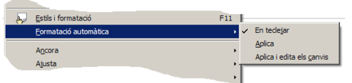

UF3. Processadors de text
Pràctica 8 - Exercici 2
Correcció automàtica
El LibreOffice Writer permet corregir de forma automàtica determinats tipus d'errades que es fan en el document. També permet substituir determinats símbols per altres més complicats de fer de forma manual. Els canvis que es realitzaran dependran de les opcions a Eines | Correcció automàtica | Reemplaça.
- Reemplaça:
- Edita la taula de substitució per corregir o substituir automàticament paraules o abreviatures del document. Es pot aconseguir que, per exemple, se substitueixi una 'c' sola pel caràcter ©.
- La substitució s'aplica després de prémer la tecla d'espaiat.
- Excepcions:
- Aquí s'han d'incloure totes aquelles combinacions de lletres o paraules que es vol que lel LibreOffice Writer no substitueixi automàticament.
- Opcions:
- En aquest bloc es poden marcar o desmarcar totes aquelles opcions que es vol que lel LibreOffice dugui a terme durant l'autoformat.
- Cometes personalitzades:
- Es pot indicar a lel LibreOffice Writer que substitueixi automàticament les cometes que s'introdueixen en escriure per unes altres de més vistoses quant a tipografia.
- Compleció de paraules:
- Es pot activar la compleció per a les paraules que s'escriuen més sovint i que el mateix programa vagi completant la llista de manera automàtica i transparent amb les paraules que aneu escrivint.
Proveu el que s'ha explicat abans amb ajut d'aquesta pràctica:
- Creeu un document nou i demaneu Eines | Correcció automàtica | Reemplaça.
- Entreu dues noves entrades de correcció automàtica: els caràcters « que s'han de substituir pel caràcter « (ALT 0171) i els caràcters » a substituir per » (ALT 0187).
- A la casella Reemplaça, escriviu els caràcters « (dos “signes menor que” seguits).
- A la casella Amb:, escriviu el símbol « (l'aconseguireu amb la combinació de tecles Alt+0171).
- Afegiu la nova entrada de correcció automàtica tot prement el botó Nou.
- De la mateixa manera, afegiu la nova entrada de correcció automàtica » per ».
- Valideu les entrades fent clic sobre el botó D'acord i proveu d'escriure els caràcters « i ». Recordeu de fer un espai en blanc després de cada parella de signes. Què n'observeu?
- Demaneu Eines | Correcció automàtica | Opcions.
- Activeu, cas que no ho estigui, la casella corresponent a l'opció Converteix en majúscula la primera lletra de les oracions.
- Proveu d'escriure: bàsicament us podeu connectar als serveis de disc. però connectar-vos per què?; observeu què passa a les primeres lletres de cada frase (inicial o després de punt).
- Comenceu a escriure en minúscules en una línia nova. Què passa a la primera lletra després d'escriure la primera paraula.
- Escriviu EN aquesta ocasió ens hem adonat… respectant les dues majúscules del principi. Què passa en fer l'espai en blanc després de EN? Demaneu Eines | Correcció automàtica | Opcions i observeu l'estat de la casella corresponent a l'opció Corregeix dues majúscules a començament de paraula.
- Escriviu, deixant un espai en blanc entre cada una, tal com estan escrites, les paraules següents: pero, a baix, a munt, aburrit. Observeu algun canvi en les paraules que heu escrit? On són les faltes d'ortografia que en teoria havien d'haver sortit? Comproveu a Eines | Correcció automàtica | Reemplaça si trobeu a la llista les paraules anteriors. Quina és la entrada que hi ha a la dreta de cada una d'aquestes?
Formatació automàtica
La formatació automàtica té tres opcions: 
- Format | Formatació automàtica | En teclejar:
- Aplica automàticament format al document mentre s'escriu, seguint les indicacions configurades a Eines| Correcció automàtica | Opcions.
- Format | Formatació automàtica | Aplica:
- Aplica automàticament al document que s'està treballant el format definit a les opcions establertes a Eines| Correcció automàtica | Opcions.
- Format | Formatació automàtica | Aplica i edita els canvis:
- Aplica automàticament al document que s'està treballant el format definit a les opcions establertes a Eines | Correcció automàtica | Opcions, però va apareixent un quadre de diàleg que demana la confirmació abans de fer cada canvi.
Proveu el que s’ha explicat abans amb ajut d’aquesta pràctica.
- Creeu un document nou i demaneu Eines | Correcció automàtica | Opcions.
- Preneu note de l'estat actual de les opcions de la columna [T] (caldrà deixar-les com estaven al final de la pràctica) i activeu-les totes.
- Premeu el botó D'acord.
- Entreu un títol i feu dos salts de línia consecutius (amb Retorn).
- Entreu tres o més guions ”-” consecutius i premeu Retorn.
- Entreu els signes +———————-+——+——-+ i premeu Retorn.
- Entreu el text * primera línia i premeu Retorn. A continuació escriviu segona línia i feu dos cops Retorn.
- Escriviu 1. primera opció i feu Retorn. A continuació escriviu segona opció i feu dos cops Retorn.
- Esborreu tot el contingut del document.
- Demaneu Edita | Selecciona-ho tot i premeu la tecla Supr.
- Demaneu Eines| Correcció automàtica | Opcions i desactiveu la casella de la columna [T] corresponent a les opcions Aplica numeració - símbol: i Aplica estils.
- Escriviu, respectant línies i espais, el text següent:
Temes sobre l'aparell digestiu: 1. Trastorns digestius i alimentaris 2. Trastorns cardiovasculars 3. Anèmia 4. Astènia * Alimentació * Vestits * Higiene personal
- Demaneu Eines| Correcció automàtica | Opcions i activeu la casella de la columna [T] corresponent a les opcions Aplica numeració - símbol: i Aplica estils (just al contrari d'abans).
- Demaneu Format | Formatació automàtica | Aplica. Observeu els canvis que s'hauran produït en el document.
- Premeu Ctrl+Z per desfer els canvis.
- Demaneu ara Format | Formatació automàtica | Aplica i edita els canvis.
- Premeu el botó Edita els canvis de la finestra que us haurà aparegut
- Assenyaleu la primera de les opcions de canvis proposades i, amb els botons Accepta o Rebutja, aneu eliminant-los de la finestra Autoformat: accepta o rebutja canvis.
- Tanqueu la finestra (premeu [X]) i observeu-ne el resultat.
- Deixeu com abans de començar les pràctiques les opcions a Eines| Correcció automàtica | Opcions.
- Tanqueu el document descartant desar els canvis i sortiu del LibreOffice Writer.
|
|

|
|